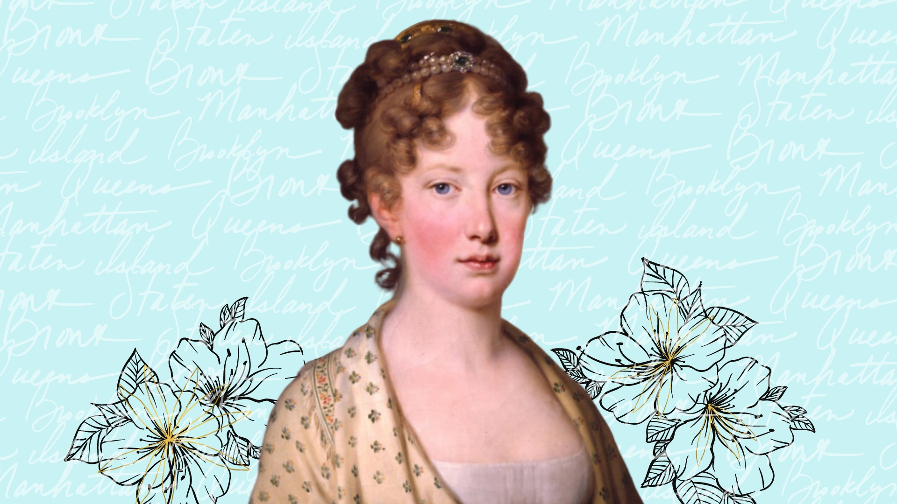

Nascida em Viena, no dia 22 de Janeiro de 1797, Carolina Leopoldina de Habsburgo-Lorena descendia de uma das casas reinantes mais nobres da Europa. Quando criança recebeu uma educação primorosa. Desde cedo, a arquiduquesa demonstrou seu interesse pela botânica e mineralogia. Era uma cientista amadora. Aos 19 anos, foi enviada ao Brasil para se juntar ao seu marido, o príncipe D. Pedro. Foi neste país que a filha dos césares demonstrou a capacidade de suas faculdades mentais ao ser protagonista do processo de emancipação política do Brasil, tornando-se soberana consorte do nascente império. Infelizmente, sua vida foi curta, tendo falecido aos 29 anos, mas legou aos brasileiros o testemunho de sua alma caridosa, sua competência e poder como mulher. Contudo, poucos são aqueles que ainda hoje se lembram de D. Leopoldina e de suas qualidades intelectuais e políticas, o que se constitui num exemplo vivo de uma Nação que pouco se recorda de sua história e dos personagens que nela atuaram. Era filha do imperador Francisco I da Áustria e de sua segunda esposa Maria Teresa das Duas Sicílias. Também foi cunhada do imperador Napoleão Bonaparte, casado com sua irmã mais velha, Maria Luísa, e sobrinha neta da rainha francesa Maria Antonieta. Seu casamento com Pedro I e sequente independência do Brasil fizeram com que se tornasse a primeira imperatriz consorte do país e a primeira imperatriz do Novo Mundo.
A educação que Leopoldina recebera em infância e adolescência era eclética e ampla, de nível cultural superior e formação política mais consistente. Essa educação dos pequenos príncipes e princesas da família Habsburgo baseava-se na crença educacional iniciada por seu avô Leopoldo II, que acreditava "que as crianças deveriam ser desde cedo inspiradas a ter qualidades elevadas, como humanidade, compaixão e desejo de fazer o povo feliz". Com uma profunda fé cristã e uma sólida formação científica e cultural – que incluía política internacional e noções de governo –, a arquiduquesa fora preparada desde cedo para reinar.

Paulo Rezzutti,
Historiador brasiliero
Leopoldina teve grande destaque na política brasileira, seja no momento em que a corte portuguesa retornou a Portugal, seja nos bastidores dos atritos entre Brasil e Portugal até o momento da Independência em 1822. Enquanto Pedro ainda mantinha a possibilidade da manutenção do Reino Unido com Portugal, Leopoldina já constatara que o caminho mais prudente era a emancipação total da metrópole. A formação intelectual e política de Leopoldina, aliadas a seu forte senso de dever e sacrifício em nome do Estado foram fundamentais para o Brasil, especialmente depois que Dom João VI, sob pressão portuguesa, fora obrigado a voltar a Lisboa. Tendo em vista o fato que era de origem Habsburgo e que fora educada sob um regime aristocrático e absolutista, Leopoldina não hesitou em defender ideais e formas mais representativas de governo para o Brasil, influenciados pelo liberalismo e constitucionalismo.
Um outro legado de Leopoldina que mantém-se até os dias atuais é a bandeira nacional. Embora a história difundida seja a de que a cor amarela representa o ouro e as riquezas naturais, e o verde as florestas brasileiras, as cores do maior símbolo nacional representam as duas dinastias que deram origem ao Brasil independente: o verde representando a casa real de Bragança (Portugal) de D. Pedro I, e o amarelo representa a casa imperial de Habsburgo (Áustria) de Maria Leopoldina.
D. Leopoldina havia conquistado seu lugar no panteão de heróis do país, como a matriarca do Império, aquela cuja intervenção seria decisiva para que uma revolução republicana não atingisse o país e fragmentasse o território nacional, assim como aconteceu às colônias espanholas na América. Todavia, ainda hoje se nota certa dose de desleixo por parte de alguns historiadores que passam por cima da figura dessa impressionante mulher quando analisam o processo de soberania do país. Leopoldina fica quase eclipsada diante dos estereótipos de D. Pedro, o primeiro imperador, e José Bonifácio, o patriarca da independência. Foram suas articulações políticas com o ministro que definiram os acontecimentos que culminaram no grito do Ipiranga. Não obstante, apesar de identificar-se pouco com os costumes do Brasil, assumiu suas responsabilidades de esposa e mãe com total competência, intercedendo por aqueles a quem considerava dignos de misericórdia. O país terá sempre uma dívida de eterna gratidão para com esta nobre arquiduquesa austríaca que triunfou na morte assim como se desiludira em vida. A ela, dedico minha total admiração e respeito!